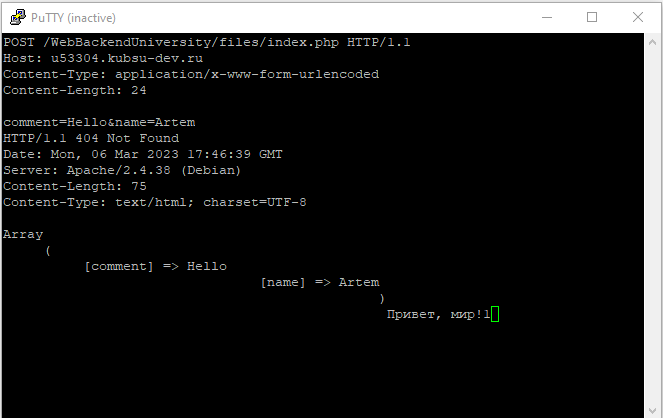

Я удалил и склонировал репозиторий снова. На картинке видно, что в внутри есть папка files.
Я получил главную страницу, используя метод GET в протоколе HTTP 1.0.
Я получил внутреннюю страницу, используя метод GET в протоколе HTTP 1.1.
Размер файла file.tar.gz, как видно на картинке, равен 11335 байт.
Медиа тип ресурса image.png, как видно на картинке, это image/png.
Отправляем комментарий и своё имя серверу по POST запросу. Как видно на картинке в ответе сервера, они были получены.
Запрашиваем первые 100 байтов файла.
С помощью запроса с методом HEAD мы можем увидеть кодировку.